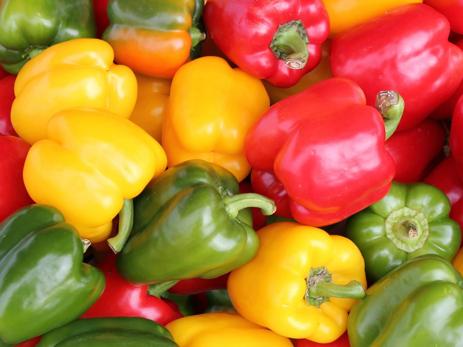
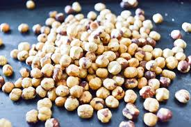
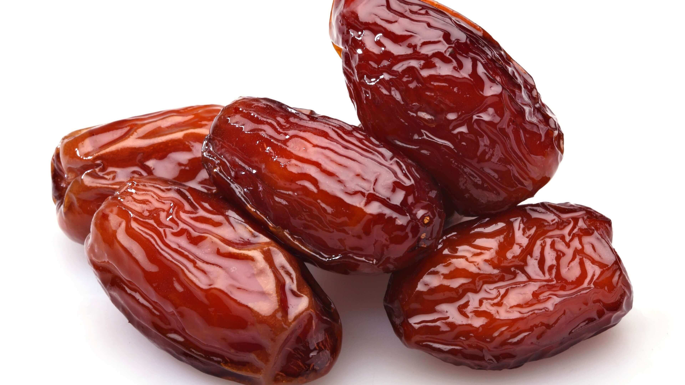
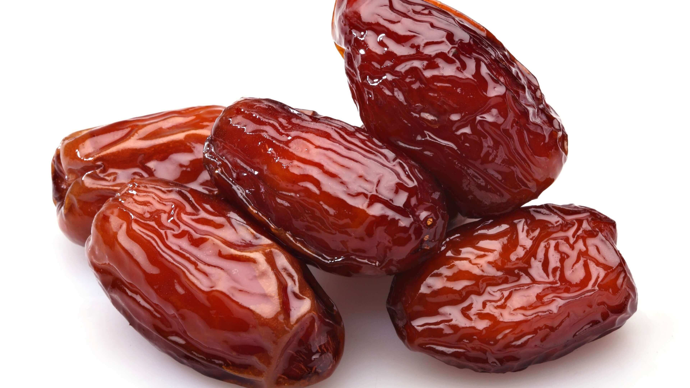
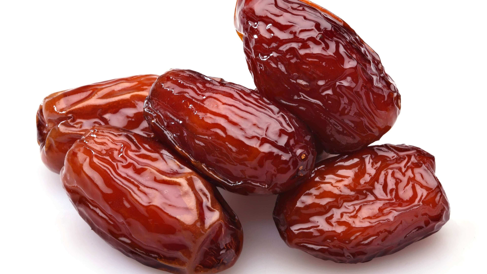

Basic/Most used elements
- Condiments and, jasmine water...
- Eggs.
- Farm animals: veal, beef...
- Fish and seafood: tuna, squid, octopus...
- Fruits: lemon, oranges, figs, dates...
- Vegetables: onions, bell peppers, carrots, chickpeas...
- Nuts: hazelnuts, almonds, chestnuts, pine nuts
- Other popular ingredients:honey


 

